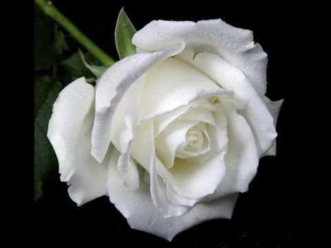

Trandafiri si legendele lor
Iftene Anca , a VIII-a B
Pagina va afisa legende pentru trandafiri:
Albi
Galbeni
Rosii
Trandafirul are in componenta sa:
Floare
Tulpina
Frunze
Radacina

Du-te pe link exterior
Du-te pe pagina cu trandafiri galbeni
Du-te pe pagina cu trandafiri rosii
Du-te pe pagina cu trandafiri albi